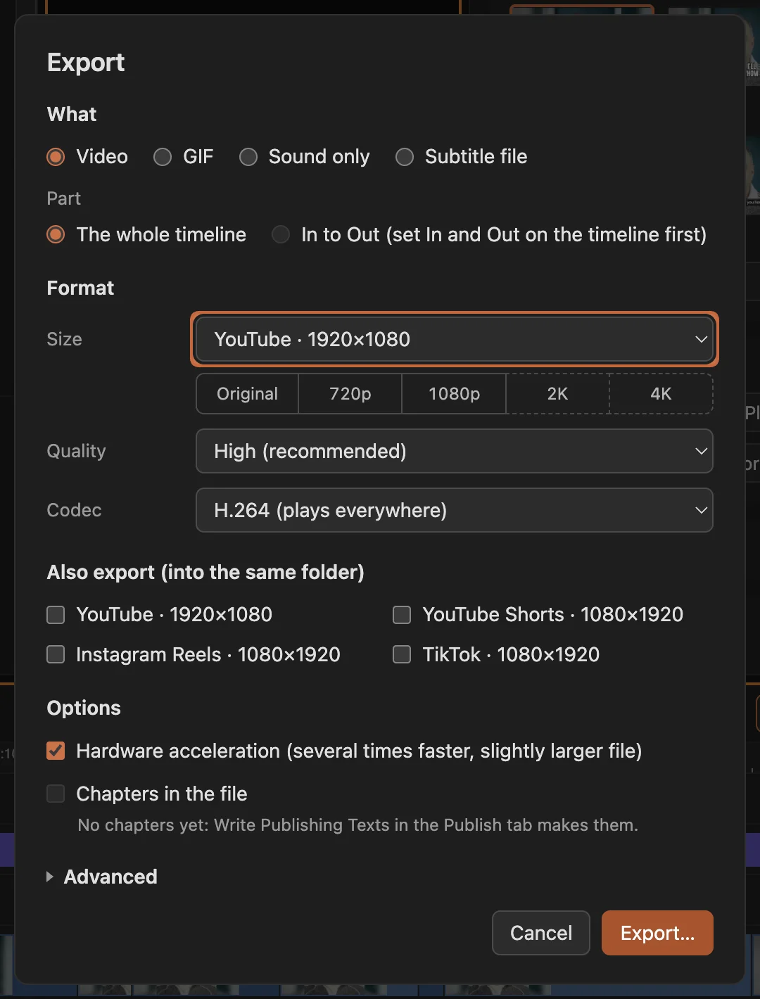
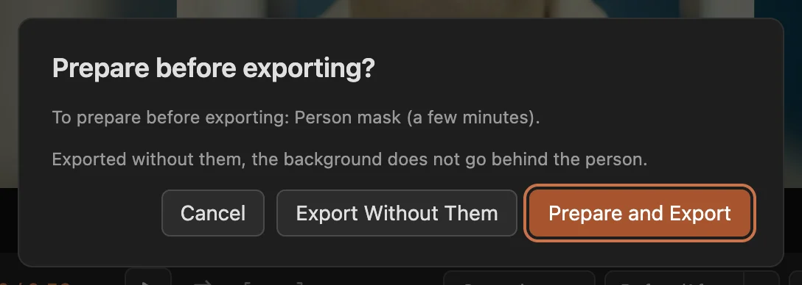

Export
Export, at the top right, opens one window for every kind of file. The choices are read top to bottom: what, which part, its size and quality, then the options.

What and which part
- What: Video, GIF, Sound only or Subtitle file (SRT or WebVTT).
- Part: The whole timeline, or In to Out once you have set In and Out.
Size
Size has the platforms ready: YouTube (1920×1080), YouTube Shorts, Instagram Reels and TikTok (1080×1920), as well as Original video, Project format and Custom. The buttons under it pick the resolution: Original, 720p, 1080p, 2K or 4K. A size larger than the project's is upscaled and gets no sharper; the window says so.
Shorts can be at most 3 minutes long.
Quality and codec
- Quality: High (recommended), Master (archive and re-editing, large file) or Small file (sharing, messaging).
- Codec: H.264 (plays everywhere), HEVC / H.265 (smaller at the same quality), ProRes 422 for further editing, or ProRes 4444, which can keep a Transparent background. For a transparent export, hide V1 on the timeline so only the titles and graphics are left.
Several platforms at once
Tick the platforms under Also export (into the same folder) and each one is exported after the first, in its own size.
Options
- Hardware acceleration uses your graphics card: several times faster, with a slightly larger file.
- Chapters in the file writes the video's chapters into it. The chapters come from Write Publishing Texts in the Publish tab.
- Advanced holds a Fixed bit rate (Mbit/s). Left empty, it follows the quality.
GIF
A looping GIF without sound, at most 60 seconds long; choose its width and its frames per second. For a longer video, set In and Out around a shorter stretch and export In to Out.
Export and wait
Press Export… and choose where the file goes. If something must be prepared first, such as finding the person for a crop that follows them, Kilnframe asks Prepare before exporting? with the time it takes: Prepare and Export, or Export Without Them.

While the export runs, Stop Export ends it.
A single picture of the frame at the playhead: File › Export Frame…